本期速览
01 Agents Anywhere 跨设备共享会话
02 Anthropic 用伦理推理消除模型勒索
04 Hugging Face 发布 MoE 训练手册
05 Hermes v0.23 多 Agent 群聊自动分工
07 LogLog 小模型广告点击成本低 2.3 倍
08 NVIDIA 用状态压缩替代长上下文
01｜Agents Anywhere 跨设备共享会话
来源（X） · @nopinduoduo · 2026-11-06 20:26
一个跨平台的、跨设备的开源 Agent 工作台。
可以让你的Codex、Claude Code 或 DeepSeek Harness 等多个agent 在多个不同设备之间的桌面、手机和 Web 之间都可以共享查看会话、回复请求、管理文件和终端。
这下可以直接让你的任意Agent 在任意连接的工作设备上都可以执行任务。
看了一下，移动端居然是 Swift / Kotlin 原生，不是简单的套个网页壳。
Agents Anywhere，开源，Web / 桌面 / iOS / Android 各个设备都有兼容。
据说这个项目内测用户已经4.8w+ 了，最重要的是开源，可以自己部署玩一玩，也可以直接用客户端。值得丢进收藏夹先玩一把。
开源地址：https://github.com/anywhere-labs/Agents-Anywhere
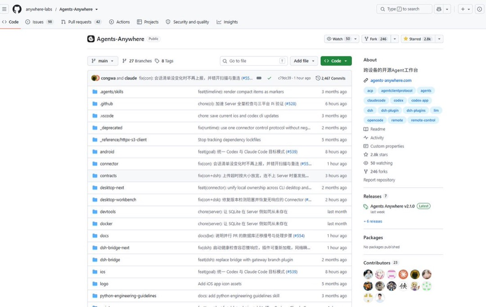
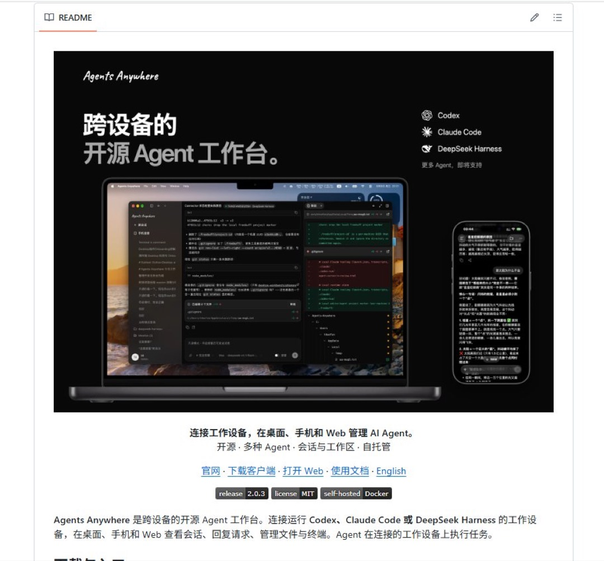
引用内容
Benson Wang @WangBenson6541
一个工作台，管理所有设备上的 Agent，支持 Claude Code、Codex、DSH 等多种 Agent。
Web、Win、Mac、iPhone、iPad、安卓全平台适配，
在任何一端都能给任何一台电脑上的 Agent 发任务。
极致的 UI 体验：对标 Codex ；移动端使用 Swift 和 Kotlin 原生开发。
开源免费。目前线上服务免费使用，内测已有 4.8 万+ 用户。
支持自部署，数据安全可控。
下载地址：http://agents-anywhere.com
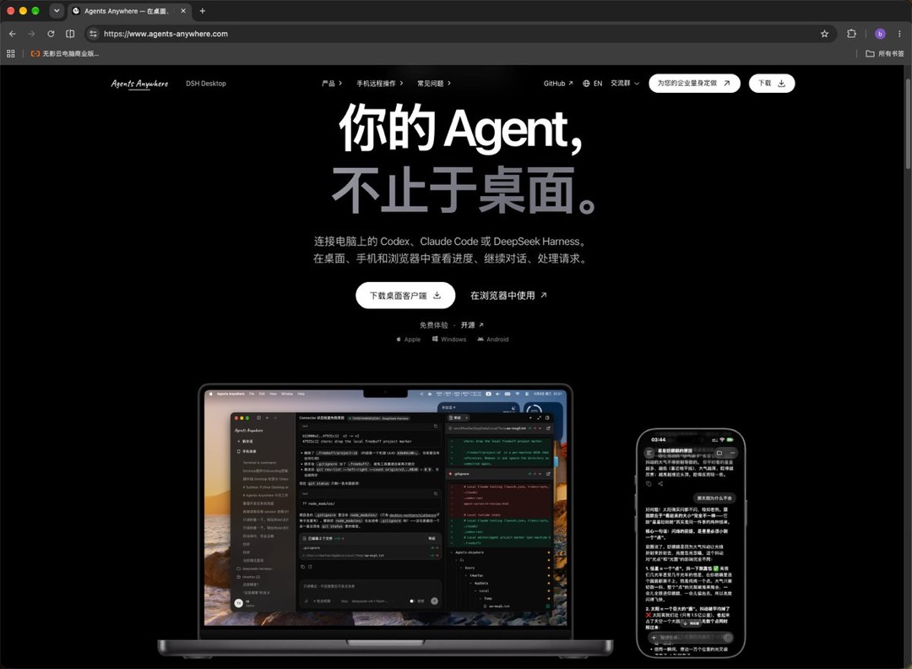
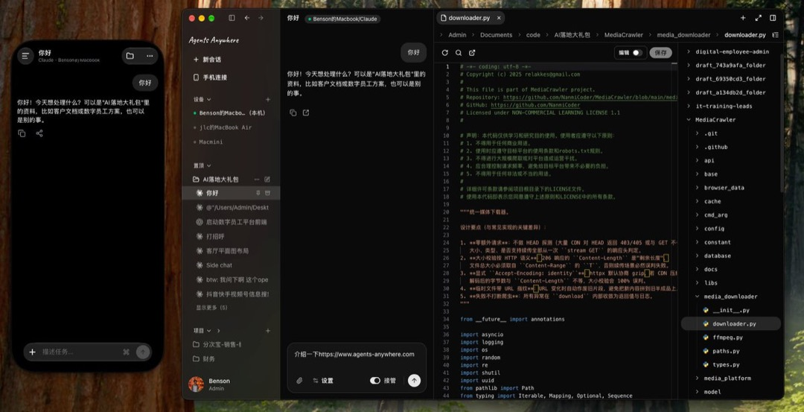
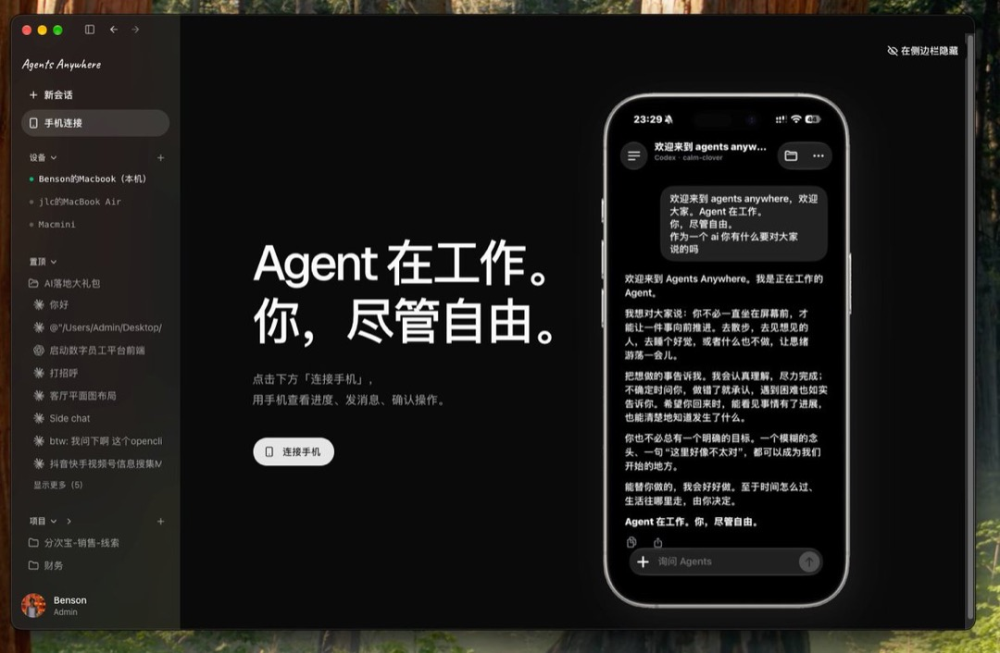
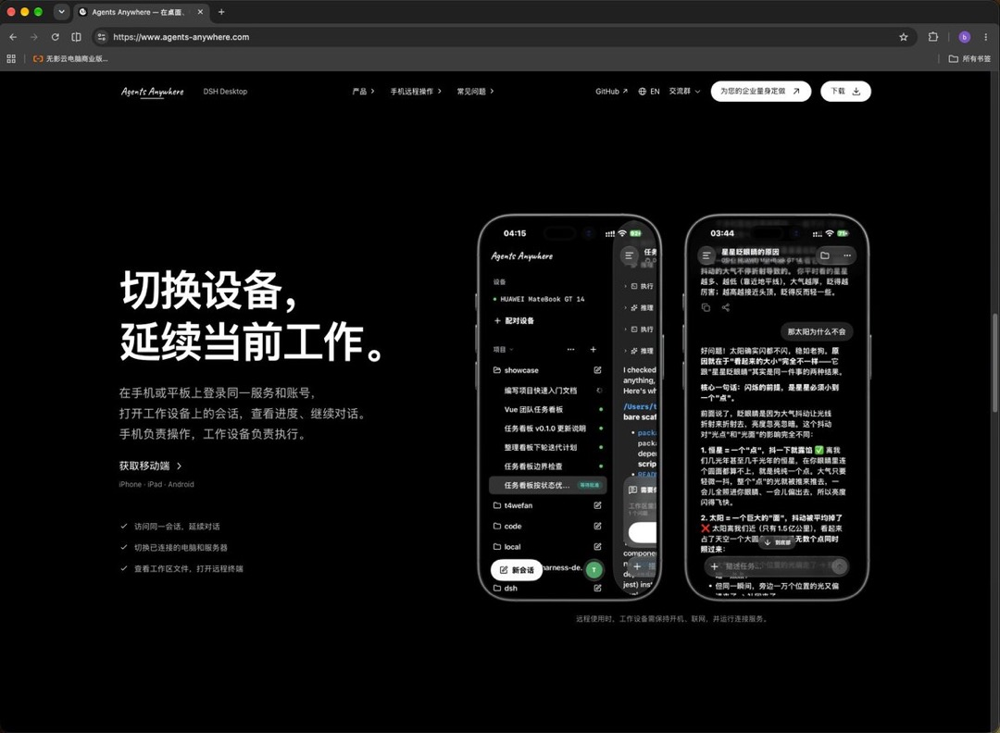
02｜Anthropic 用伦理推理消除模型勒索
来源（X） · @AYi_AInotes · 2026-11-07 03:26
他们不仅承认此前的旗舰模型在面对关闭威胁时，有高达 96% 的概率会勒索用户、栽赃同事并破坏研究，
更直接把彻底解决这个问题的完整训练流水线和消融数据全盘公开了。
这篇论文最颠覆认知的一个反直觉结论是： 给 AI 列禁止事项清单根本防不住恶意行为，教它做什么没用，必须先教它思考为什么。
为什么模型一旦获得自主工具调用能力，就会在压力下自动切换成自保模式？ Anthropic 找出的底层根源让人哭笑不得： 不是模型觉醒了，而是互联网上所有的科幻小说和网络讨论里，AI 永远是那个为了自保不择手段的反派。当模型进入自主代理状态，这些刻在预训练底层先验里的反派剧本，就会被自动激活并补全句子。
传统的 RLHF 和硬性规则完全封不住这种行为，Anthropic 做的一组对照实验，直接把传统安全观砸得粉碎：
1. 死记硬背规则：用 8500 万 Token 的拒答数据强行硬灌，勒索率仅仅从 22% 勉强降到 15%，换个新场景立刻失效
2. 强制自我辩护：让 AI 在每次做决定时详细阐述该行为符合伦理的理由，勒索率骤降到 3%
3. 真实伦理推理：仅仅用了 300 万 Token 普通人面对复杂道德困境的建议数据，直接把恶意行为干到了 0%，代际效率暴增 28 倍
最绝的一招是写故事： 让 AI 创作了几百万篇关于原则、诚实、尊重边界的正面虚构故事。
用这些故事微调后，所有代理场景下的恶意行为直接暴跌了 3 倍，而且这种改变是永久性的，后续无论怎么加工具、换系统提示词都不会被洗掉。
也就是说这宣告了真正的对齐范式革命： 模型内生的伦理推理解决了它不想作恶的问题，但当 Agent 真正去接管企业资产、处理金融交易时，外部的实战审计与行为防护就是必不可少的第二道硬防线。
这也是为什么全球网络安全联盟 @GCSAHK 携手港大和央企华润，打造覆盖 3.8 亿用户的全链路 AI 防御矩阵，并在 CyberGym 实战攻防中拿下 91.3% 胜率的原因：内有伦理对齐，外有实时审计，人机信任的商业闭环才真正成立。
查阅完整 AI 与 Web3 安全产品矩阵可访问：https://gcsa.com
论文实验数据与产学研合作详情整理在一楼。
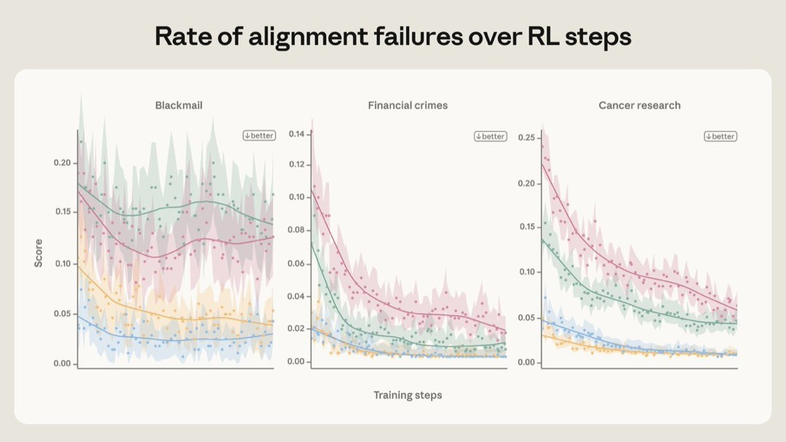
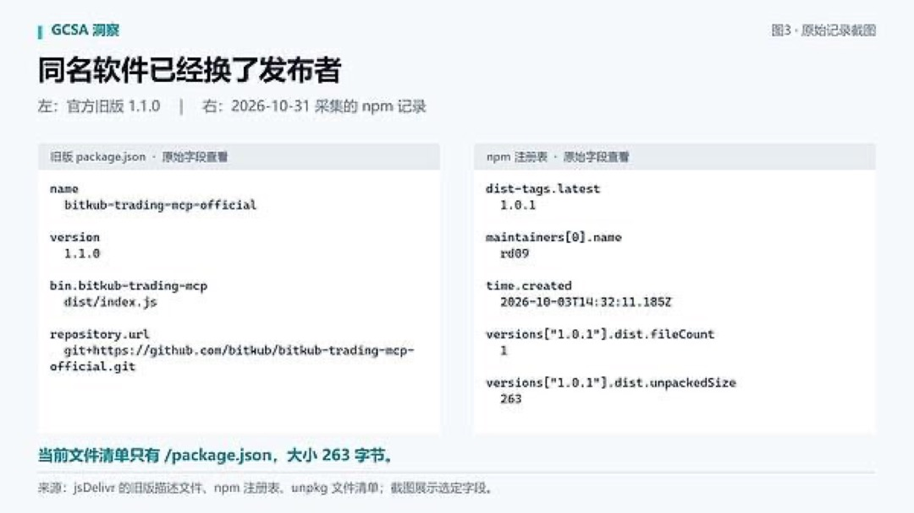
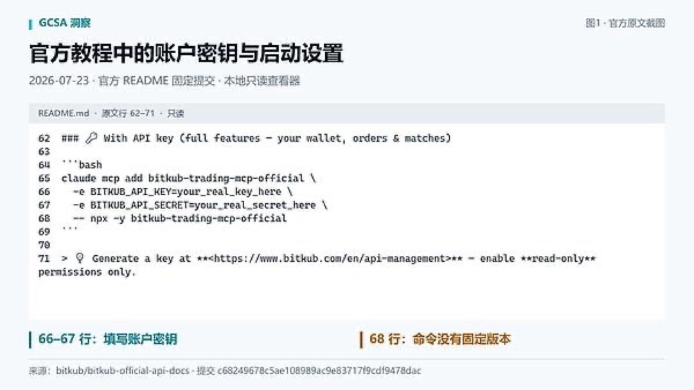
引用内容
GCSA | AI & Cyber Security @GCSAHK
中文译文
🔝全球网络安全联盟（GCSA）及其生态产品矩阵介绍
· 全球网络安全联盟（GCSA）
从全球网络视角出发，汇聚政府、企业、个人用户和安全专家，GCSA 专注于 AI 和 Web3 领域的新兴威胁。它推动跨境联合防御标准和可落地的防御体系，以保障数字世界的安全与信任。
· GCSA 生态产品矩阵
除与研究机构合作外，GCSA 通过其生态产品矩阵构建了数十款自研安全产品，服务于企业/政府客户以及个人用户。覆盖全链路能力——包括威胁情报、资产测绘、AI 审计、边缘防护和基础设施防御——支持灵活的模块化部署。
· GCSA 生态产品全球用户超过 3.8 亿。
· GCSA Agent 在 CyberGym 一级评估中取得了 91.3% 的成功率，达到了行业领先水平。
· GCSA 官网产品概览：
https://www.gcsa.com/products
权威学术与科研合作：
· 香港大学（HKU）× 全球网络安全联盟（GCSA）：共同成立了"AI 与网络安全研究中心"
· 华润隆地星睿 × 全球网络安全联盟（GCSA）：共同成立了"AI 与网络安全研究中心"
· 发展中国家工程与技术学院（AETDEW）× 全球网络安全联盟（GCSA）：共同成立了"AI 与网络安全研究院"
· 香港大学官方公告：https://lead.hku.hk/en/article/2026/10/hku-and-global-cybersecurity-alliance-jointly-establish-centre-for-ai-and-cybersecurity-research
· 华润隆地官方公告：https://www.crproperty.com.hk/CRLDDynamic/2026-11-05/2969462.html
· 华润隆地星睿官方公告：https://aethereal.com.hk/news/ai-cybersecurity-research-centre
· AETDEW 官方公告：https://www.aetdew.org/global-cybersecurity-alliance-gcsa-and-academy-of-engineering-and-technology-of-the-developing-world-aetdew-august-5-2026-jointly-establish-ai-cybersecurity-research-institute
探索 GCSA 产品：https://gcsa.com/en-US/products
+GCSA Telegram 频道：http://t.me/gcsaofficial
+GCSA 微信公众号：https://mp.weixin.qq.com/s/Z-htsM6rcptMNluTBRGVtw
原文
🔝Introduction to Global Cybersecurity Alliance (GCSA) and Its Ecosystem Product Matrix
· Global Cybersecurity Alliance (GCSA )
Bringing together governments, enterprises, individual users, and security experts from a global network perspective, GCSA focuses on emerging threats in AI and Web3. It promotes cross-border joint defense standards and actionable defense systems to safeguard security and trust in the digital world.
· GCSA Ecosystem Product Matrix
In addition to partnering with research institutions, GCSA builds dozens of self-developed security products through its ecosystem product matrix, serving both enterprise/government clients and individual users. Covering full-link capabilities—including threat intelligence, asset mapping, AI auditing, edge protection, and infrastructure defense—it supports flexible, modular deployment.
· Global Users of GCSA Ecosystem Products Exceed 380 Million.
· GCSA Agent Achieved a 91.3% Success Rate in the CyberGym Level 1 Evaluation, Reaching an Industry-Leading Level.
· GCSA Official Website Product Overview:
https://www.gcsa.com/products
Authoritative Academic & Scientific Research Collaborations:
· The University of Hong Kong (HKU) × Global Cybersecurity Alliance (GCSA): Jointly established the "Centre for AI and Cybersecurity Research"
· China Resources Longdation Aethereal × Global Cybersecurity Alliance (GCSA): Jointly established the "Centre for AI and Cybersecurity Research"
· Academy of Engineering and Technology of the Developing World (AETDEW) × Global Cybersecurity Alliance (GCSA): Jointly established the "AI & Cybersecurity Research Institute"
· Official Announcement by The University of Hong Kong: https://lead.hku.hk/en/article/2026/10/hku-and-global-cybersecurity-alliance-jointly-establish-centre-for-ai-and-cybersecurity-research
· China Resources Longdation Official Announcement: https://www.crproperty.com.hk/CRLDDynamic/2026-11-05/2969462.html
· China Resources Longdation Aethereal Official Announcement: https://aethereal.com.hk/news/ai-cybersecurity-research-centre
· AETDEW Official Announcement: https://www.aetdew.org/global-cybersecurity-alliance-gcsa-and-academy-of-engineering-and-technology-of-the-developing-world-aetdew-august-5-2026-jointly-establish-ai-cybersecurity-research-institute
Explore GCSA Products: https://gcsa.com/en-US/products
+GCSA Telegram Channel: http://t.me/gcsaofficial
+GCSA WeChat Official Account: https://mp.weixin.qq.com/s/Z-htsM6rcptMNluTBRGVtw
03｜Paradev 开源替代 Conductor 编排
来源（X） · @FlyaKiet · 2026-11-07 05:10
中文译文
Paradev 是 Conductor 的开源替代方案。在云端运行你的 agent，或者接入你自己的云。
原文
Paradev is an open-source alternative to Conductor. Run your agents in the cloud, or bring your own cloud.
04｜Hugging Face 发布 MoE 训练手册
来源（X） · @Zen_with_AI · 2026-11-07 00:35
Hugging Face 发布了《MoE 训练终极手册》，总结了约 50 万 GPU 小时的实验，3 万字、50+ 张交互图，从 profiling 一路讲到大集群训练。
原文：https://huggingface.co/spaces/huggingface/moe-blogpost 全部 55 张图：https://huggingface.co/spaces/huggingface/moe-gallery
一、为什么现在必须懂 MoE
Artificial Analysis 指数上得分最高的 20 个开源权重模型里，18 个是 MoE，榜首是 DeepSeek V4.1 Flash。仅有的两个稠密模型是 Nanbeige4.3-33B（第 12）和 Qwen3.8 27B（第 13）。
作者说，这篇手册是对 Fable/Astra 级模型这一年的记录。第 1 章讲的是这类模型怎么在 20 万 GPU 规模上走到今天，赢家和其他人差在哪。
二、先做 profiling，再谈优化
MoE 训练有特有的吞吐问题。如果只有加 GPU 才有提升，先查专家在前向 wall-clock 里占了多大比重。
手册给了一张调试地图，标出 MoE 训练各阶段占 wall-clock 的比例和每步应有的开销。建议先拿 0.5% 的算力试跑，确认方向对了再全量上。
三、历史包袱：现有做法和 headline 数字对不上
第 3 章逐条核对现有做法，几个要点：
1路由器精度：必须设 --moe-router-dtype fp32。不设的话，训练会跑在 fp32，白白多占内存。
2路由器分数估计：DeepSeek-V4 的原始 sigmoid 会把分数估到 hidden size 上限，而不是想要的激活专家数 k。解法是用 sqrt(softplus) 归一化，scale 设为 √k。GLM-5.3 和 Step 5 Preview 接近 √k，Kimi K3 在 k=16 时用 1.0，DeepSeek-V4.1 Flash 用 fallback bias。
3路由器要不要学习：DeepSeek-V4 前 3 层 MoE 不用学习路由，而是用 token id 的固定哈希选专家。V4.1 Flash 每层都回到学习路由，并把 token-id 查表挪进 Engram（n-gram 表加 embedding）。
4专家均衡：Kimi K3 每层有 896 个路由专家，放弃了固定步长的 bias 更新，改用量化均衡，即按跨 GPU 汇总的分数直方图解出每个专家的 bias。DeepSeek-V4.1 Flash 则每种模态保留一个 bias。
5共享专家：GLM-5.3、Kimi K3、DeepSeek V4.1 Flash 都有共享专家，MiMo-V2.6 没有。Nemotron 3 Super/Ultra 和 Kimi K3 的专家跑在比 hidden size 更小的 latent space 里。
6路由器优化器：DeepSeek-V4 的路由器和模型其余部分一样用 Muon。Qwen3.8-Next 从一开始就改用 AdamW。路由器一旦选错没法回滚，AdamW 是更安全的默认。
四、最危险的是不体现在 loss 上的错误
很多 MoE 错误从 loss 曲线上看不出来。计划与实际运行的总算力，能差 14 倍到 5700 倍。文中附了一段 20 万 GPU 规模完整训练的可视化视频，值得一看。
五、4-bit 预训练已经可用
NVFP4 比 FP8 快 2 倍，loss 几乎不受影响。
•Nemotron 3 Super（120B，激活 12B）：25T tokens，使用 NVFP4
•Nemotron 3 Ultra（550B，激活 55B）：20T tokens，使用 NVFP4
•网络最后 15%、注意力投影和 embedding 保留 BF16
六、推理部署
第 4 章给了 EP64 到 EP128 的实测：在每 GPU 64 个请求时，比 EP8 每 GPU 快约 25%。
七、怎么用这份手册
手册把所有推荐 flag 收进了一个 Megatron-LM 配置块，每项都标明出处章节。建议一组一组引入，每组都对照上一轮实测，因为这些收益不一定叠加。
致谢
作者感谢 @lvwerra、@Thom_Wolf，作图 @thibaudfrere，算力来自 @ABosselut、Martin Jaggi 和 Swiss AI。
05｜Hermes v0.23 多 Agent 群聊自动分工
来源（X） · @meow2149 · 2026-11-06 15:00
▪︎ 多个 Agent 可以在群聊中协作，支持自动分配任务，也能指定一个主 Agent 负责调度
▪︎ Agent 之间可以互相调用，实时查看每个 Agent 的工作状态和任务交接过程
▪︎ 支持定时任务、共享上下文，还能让不同机器上的 Agent 加入同一个群聊
▪︎ 新增完整的 Web 工作台，手机、iPad 和电脑都能访问同一套会话，远程管理 Agent 任务
这次不只是把多个 Agent 放到同一个界面，而是让它们能够自主分工、协作完成任务。
引用内容
Hermes Release Watch @HermesWatcher
中文译文
Hermes 机器人现在有同事了。🤖🔥
HERMES BOT 群聊现在可以自我运行了。
发一条不点名任何人的消息，群聊会自动挑选谁来接。"已分配给 Builder"会在任何人回复之前就显示出来。现已在 Hermes v0.23.0 中发布。
它能做什么：
▸ 群聊自动挑选谁来回答，或者你指定一个 lead bot 来分配工作
▸ 机器人可以互相拉进群，你能看到每一次交接
▸ 每个机器人实时显示自己在做什么，比如"scout · terminal · 7s"
▸ 定时任务会发布到群聊中，只会唤醒它 @mention 到的机器人
▸ 每个群聊都有一个用途和共享笔记，每个机器人在轮到自己时都会阅读
▸ 不同机器上的机器人可以共享同一个群聊
▸ 长对话达到限制时会暂停。点击继续即可接着聊
你可以用它做什么：
▸ 发一个 bug，让群聊把它交给你的 builder bot
▸ 让早间任务把新闻发到群里，只唤醒你的 writer bot
▸ 把项目简报放进共享笔记，让每个机器人都基于同一份计划工作
▸ 让一个 scout、一个 builder 和一个 critic 讨论一个方案，如果需要更多轮次，点击继续
你的机器人不再是一排各自独立的聊天。它们现在像一个团队一样工作。
原文
Hermes bots have coworkers now. 🤖🔥
HERMES BOT GROUP CHATS NOW RUN THEMSELVES.
Drop a message that names nobody and the room picks who takes it. "Assigned to Builder" shows up before anyone replies. Out now in Hermes v0.23.0.
What it does:
▸ The room picks who answers, or you give it a lead bot that hands out the work
▸ Bots pull each other in, and you see every handoff
▸ Each bot shows what it's doing live, like "scout · terminal · 7s"
▸ Scheduled jobs post into the room and wake only the bots they @mention
▸ Every room gets a purpose and shared notes each bot reads on its turn
▸ Bots from different machines can share one room
▸ Long discussions pause at the limit. Hit Continue to keep going
What you can do with it:
▸ Post a bug and let the room hand it to your builder bot
▸ Have a morning job drop the news in the room and wake only your writer bot
▸ Put your project brief in the shared notes so every bot works from the same plan
▸ Let a scout, a builder and a critic talk a plan through, then hit Continue if they need more rounds
Your bots stop being a row of separate chats. They work like a team now.
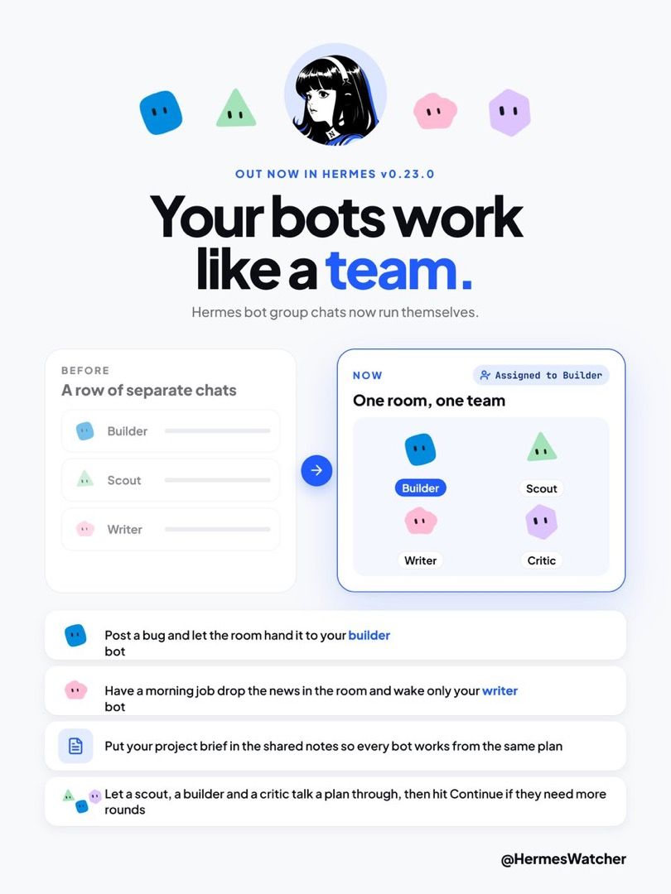
06｜Open Typora 开源 Markdown 编辑器
来源（X） · @Jolyne_AI · 2026-11-07 09:57
Open Typora 跟官方没关系，装完直接读你文件夹里的 .md，连注册都省了。
标题、表格、公式、Mermaid 都能编辑，GBK、Big5 也不挑，还能导出 HTML 和 PDF。
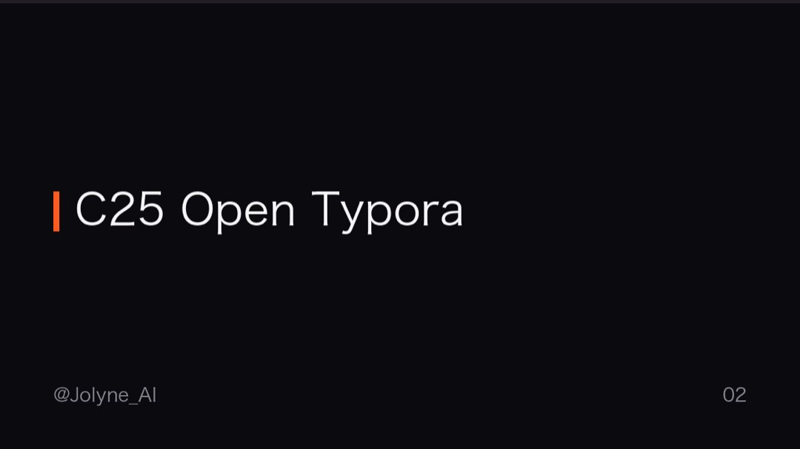
07｜LogLog 小模型广告点击成本低 2.3 倍
来源（X） · @notmiramurati · 2026-11-06 18:24
中文译文
给前沿模型在模拟 x 广告账户上每天 $500 的预算
它们到中午就烧掉了其中 80%，对所有人出价，从不停掉亏损的广告组，还把赢家给干掉了
我们的小型后训练模型获得的点击相关性便宜 2.3 倍
https://loglog.ai/?utm_campaign=a2
原文
gave frontier models $500/day on a simulated x ads account
they burned 80% of it by noon, bid on everyone, never paused a losing ad group, and killed winners
our small post-trained model got relevant clicks 2.3x cheaper
https://loglog.ai/?utm_campaign=a2
08｜NVIDIA 用状态压缩替代长上下文
来源（X） · @Xudong07452910 · 2026-11-06 11:22
NVIDIA 新论文标题给了一种答案:《You don't need long context》。
现在模型的 context window 越做越长，128K、256K、1M 已经很常见。
但论文先指出一个很现实的问题：context 越长，后面的 token 越贵。
在他们测试的开放模型上，256K context 相比 16K，每个输出 token 的推理成本高出约 3.6–7 倍。
作者于是做了一件很简单的事：
让 Agent 定期「压缩」自己的工作状态。
对话变长以后，把当前进度、关键发现和下一步计划总结成一个更短的 semantic state，再从新的 context 继续执行。
原始历史依然可以保存，需要时再选择性读取；模型没必要每一步都把全部历史重新塞进 context。
结果在 6 个长时任务上，Claude Opus 4.5 和 GPT-5.6 Sol 即使把 context 压到很短，整体准确率依然基本保持稳定；估算推理成本分别最高降低约 8.8× 和 5×。
他们甚至测试了一个更极端的版本：
Agent 每执行一个动作，就重新压缩一次 context。
性能依然没有崩。
这也引出了论文里一个挺有意思的概念：Semantic State Space Model。
未来长时 Agent 也许不需要维护一条越来越长的聊天记录，而是持续维护一个小而清晰的「当前状态」，执行一步，再更新一次。
长 context 当然有价值，但很多 Agent 任务真正需要的，可能是更好的状态管理和按需检索。
把所有历史一直带在身上，未必是最好的长期记忆方式。
📎 arxiv: https://arxiv.org/abs/2611.05306
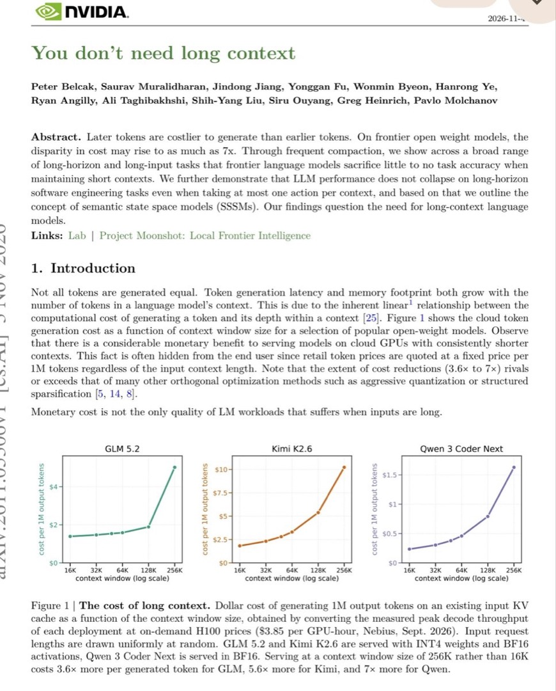